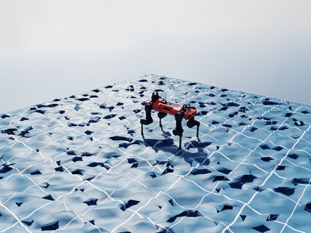
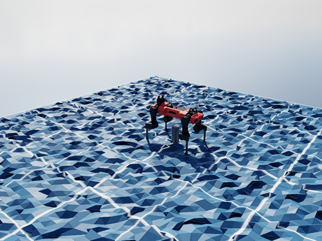
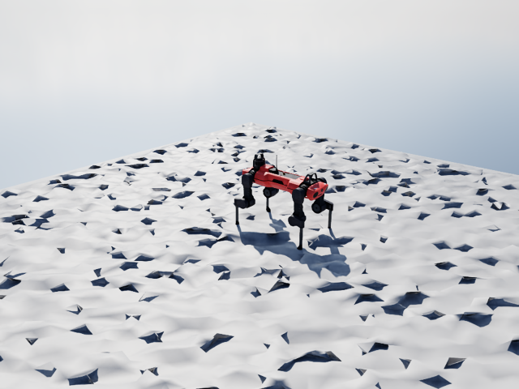
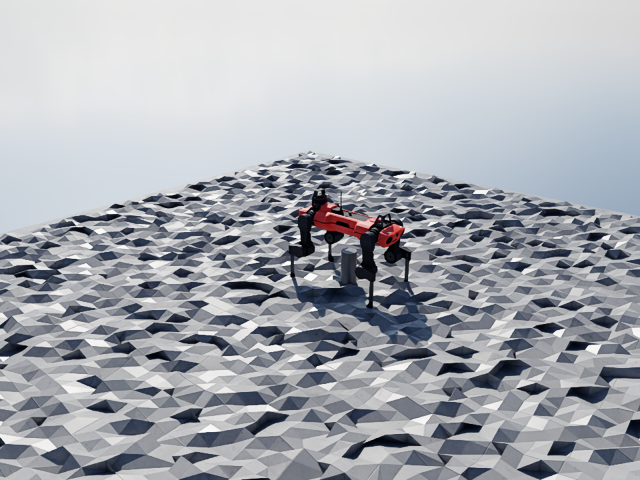
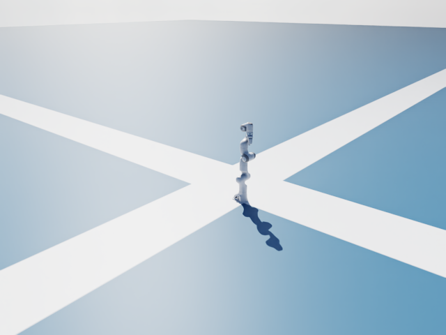
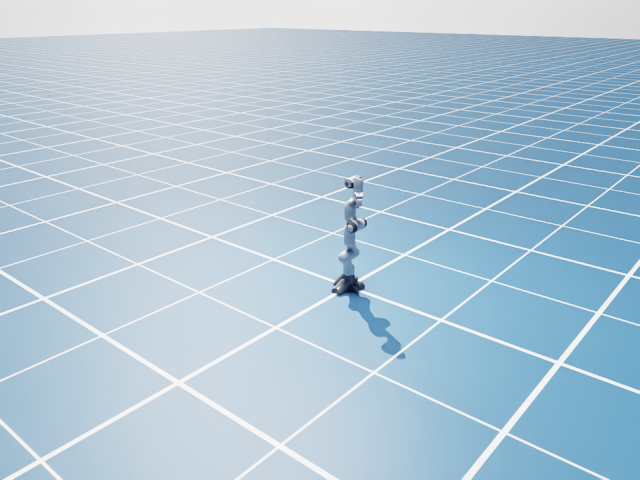
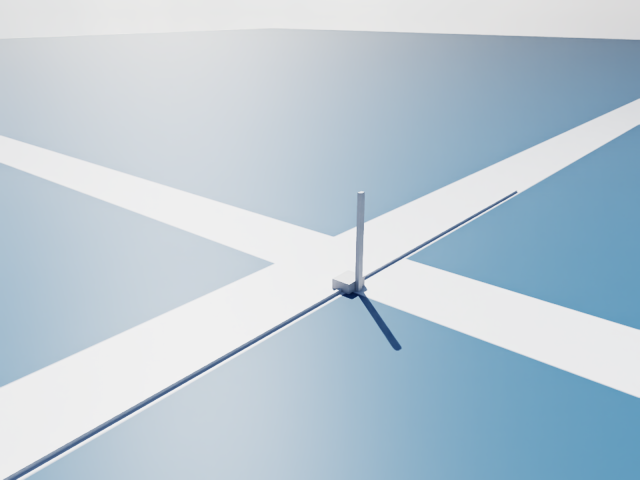
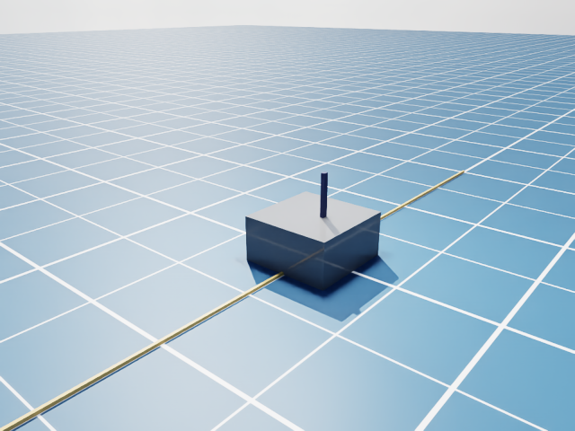
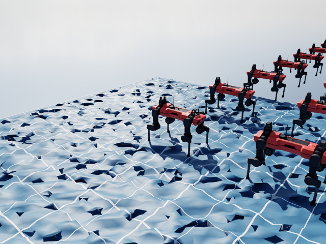
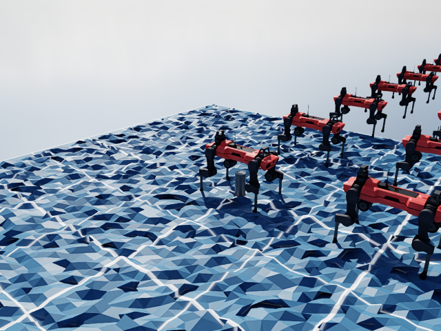

Technical report
USD scene preservation for Newton RTX
Abstract
Newton’s USD importer reconstructs a limited visual scene, which can discard authored appearance. This study compares that path with rendering the composed source scene through ovstage and OVRTX, using Isaac Lab assets and synthetic pose replay. Source preservation retains visual information without adding renderer-specific shader parsing to Newton. The proposed migration keeps ViewerRTX, centralizes physics interpretation in Newton and uses ovnewton as an optional adapter. Publication overhead remains substantial for 64 moving robots.
Contents
Newton prototype branch · API and reproduction.
Implemented: external-scene rendering and CPU/CUDA pose transport. Proposed: the complete viewer upgrade, dependency changes and shared physics importer.
1. Proposed architecture
USD (Universal Scene Description) composes geometry, materials, lights and environment into a scene. Preserve this scene; Newton imports physics and publishes motion through a body-to-prim mapping, which associates simulated bodies with scene objects. Keep scene ownership and live USD prims outside Model; retain portable visuals for other viewers.
| Component | Responsibility |
|---|---|
| ovpopulation — load | Uses OpenUSD to populate rendering and/or physics data in ovstage. Python: ovstage.population.open_usd(...). |
| ovstage — share | Runtime scene store: prims, hierarchy, attributes and tensor access. Publication ordinals are increasing update identifiers that coordinate when changes become readable. |
| ovnewton — connect | Currently imports ovstage physics and synchronizes state. Proposed: a source reader plus bindings that reuse Newton’s import policy and pose transport. |
ViewerRTX can remain independent of ovnewton. Put shared pose transport in Newton’s optional ovstage integration; ovnewton delegates pose writes to it. OVRTX renders; ViewerRTX presents the result.
| Viewer mode | Scene ownership |
|---|---|
| Existing USD / Isaac Lab scene | Application owns stage, renderer and publication; ViewerRTX borrows them. |
| Procedural Newton example | Viewer creates its stage, geometry, camera and lights; uses the same transport and render path. |
2. OVRTX upgrade in Newton
Migrate the viewer before unifying the importers. Newton’s rtx extra allows ovrtx>=0.3; its generated-scene path still calls deprecated renderer scene APIs. A version bump alone leaves that migration unfinished. Current code, OVRTX architecture.
| Change in Newton | Concrete replacement |
|---|---|
| Qualify the runtime pair | Start with tested ovrtx==0.5.0.377615 + ovstage==0.2.0.377349 in optional newton[rtx]; replace the open-ended renderer requirement. Core stays independent. |
| Separate scene creation from display | Remove ViewerRTX’s ViewerUSD inheritance. Compose an owned-scene builder or borrowed scene with one render-product consumer. Existing USD generation can bootstrap owned scenes once. |
| Move scene operations to ovstage | Replace renderer open_usd, bindings and attribute writes with population, cached stage queries and tensor writes. Port cameras, visibility, meshes and debug overlays too. |
| Adopt the 0.5 interfaces | Use DLPack tensor interchange, Boolean reset flags and full RenderVar output paths; remove .tensor wrappers and raw DLTensor construction. |
Load once — current APIs
ovrtx.register_schema_paths()
renderer = ovrtx.Renderer(config=ovrtx.RendererConfig(sync_mode=True))
stage = ovstage.Stage("scene")
renderer.attach_ovstage(stage)
ovstage.population.open_usd(
stage,
scene_usd,
ordinal=1,
domains=ovstage.PopulationDomain.ALL,
)
stage.advance_write_floor(1).wait()
Publish, then render — prototype API
binding = OvstageBodyBinding(
stage,
model,
ordinal=1,
prim_paths=paths,
body_indices=indices,
body_local_transforms=offsets,
)
viewer = ViewerRTX(
stage=stage,
renderer=renderer,
render_product=product,
)
# Finish rendering before the next write.
binding.write(state, ordinal=frame)
stage.advance_write_floor(frame).wait()
viewer.render(ordinal=frame) # frame starts at 2
Excerpts assume an authored camera/RenderProduct and final-model mappings. Register additional physics schemas before population. See imports and cleanup and 0.5 API changes. The prototype window is a fixed-camera preview; full interaction still needs porting.
3. Shared physics import and ownership
One physics interpretation, two source readers. Newton owns units, mass/inertia, collision geometry and joints. Readers supply resolved facts. Moving ovnewton’s parser while retaining Newton’s old parser would preserve the duplication.
| Order / owner | Deliverable | Done when |
|---|---|---|
| 1 · Newton | Complete the viewer upgrade above; use the existing USD importer during transition. | Both viewer modes pass headless/window, camera, overlay, deformation and cleanup checks on the qualified runtime pair. |
| 2 · Newton + ovnewton | Newton exposes a source-neutral physics importer and remappable bindings. ovnewton supplies the ovstage reader, replaces its separate physics policy and reuses pose transport. | Readers produce equivalent models; bindings survive cloning, body collapse and reordering with correct affine offsets. |
| 3 · ovstage + ovnewton | Expose authored/fallback/blocked distinctions; handle instanced colliders; align supported Newton and ovstage versions. | ANYmal, Franka and Cartpole import correctly with one jointly tested dependency set. |
Steps 2–3 proceed together. Inspected ovnewton pins Newton >=1.5,<1.6 and ovstage 0.2.0.378985; it cannot simply be added to Newton 1.7 development. That alignment is separate from the viewer-only runtime pair above.
Mapping contract: import bindings retain prim paths, stable body identities and rest offsets; resolve final indices after model construction. The prototype requires those indices explicitly. The application owns scene lifetime and publication.
4. Visual comparison
Both sides use OVRTX 0.5 with matched camera, lighting and authored settings. These are Isaac Lab asset-derived scenes, including a generated heightfield; complete reinforcement-learning (RL) tasks and parity with Omniverse Kit rendering remain untested. Select a scene and compare the overlay.
ANYmal on an Isaac Lab heightfield


ANYmal with the task’s marble MDL material


Franka with Isaac checker ground


Cartpole with Isaac checker ground


64 referenced ANYmals


Preserving the source addresses appearance discarded during import in #4051. Exact Kit matching still depends on backend features, exposure, color management and temporal settings.
5. Performance and qualification
| Measured result | Required follow-up |
|---|---|
| 41–46 ms/frame for 64 moving ANYmals, before physics | Profile publication before treating this as suitable for large RL workloads. |
| 20–21 ms in global publication alone | ovstage/OVRTX team: reduce commit cost and retest moving scenes. |
| +164–812 MiB GPU allocation for small source scenes | Set workload-specific memory budgets; preserved appearance has a measurable cost. |
| Earlier import: 52.5 → 7.6 s without visual extraction | Promising duplicate-work reduction; separate OVRTX 0.3 experiment, not a clone-pipeline comparison. |
13 research runs · RTX 4090 / Windows · 640 × 480 · ≥30 s warmup + 60 frames. Synthetic pose replay, not solver execution; mostly one process repetition. GPU figures are allocation snapshots. Prototype: 64 robots at 41.4 ms/frame, including 22.5 ms encoding/writes/publication, without importing PXR or ovnewton.
Inspect all 13 runs and measurement definitions
| Scene / input / stage | Workload | Populate (s) | Frame median (ms) | Frame p95 (ms) | Publish median (ms) | CPU (MiB) | GPU (MiB) |
|---|---|---|---|---|---|---|---|
| anymal_1generated · all · 0.2.0.377349 | Static | 0.517 | 2.56 | 3.13 | — | 3424 | 2771 |
| anymal_1source · all · 0.2.0.377349 | Static | 0.108 | 2.57 | 3.44 | — | 3956 | 3583 |
| anymal_64generated · all · 0.2.0.377349 | Static | 0.993 | 2.94 | 3.32 | — | 3524 | 2754 |
| anymal_64source · all · 0.2.0.377349 | Moving / CUDA | 0.790 | 41.07 | 53.78 | 21.92 | 3505 | 3238 |
| anymal_64source · rendering · 0.2.0.377349 | Moving / CUDA | 0.214 | 41.38 | 49.77 | 22.56 | 3520 | 3237 |
| anymal_marble_1generated · all · 0.2.0.377349 | Static | 0.482 | 2.70 | 3.60 | — | 3400 | 2706 |
| anymal_marble_1source · all · 0.2.0.377349 | Static | 0.188 | 2.79 | 3.43 | — | 3590 | 2870 |
| cartpole_1generated · all · 0.2.0.377349 | Static | 0.031 | 3.16 | 3.71 | — | 3386 | 2642 |
| cartpole_1source · all · 0.2.0.377349 | Static | 0.052 | 2.77 | 3.51 | — | 3460 | 3173 |
| franka_1generated · all · 0.2.0.377349 | Static | 0.478 | 2.86 | 3.96 | — | 3395 | 2644 |
| franka_1source · all · 0.2.0.377349 | Static | 0.084 | 3.85 | 4.52 | — | 3471 | 3174 |
| anymal_64source · all · 0.2.0.378985 | Moving / CUDA | 0.494 | 45.93 | 60.01 | 24.38 | 6536 | 3518 |
| anymal_64source · all · 0.2.0.378985 | Moving / CPU | 0.507 | 42.48 | 51.22 | 21.90 | 3510 | 3237 |
Static rows reuse a committed update. Moving rows write 1,088 transforms each frame; frame time includes publication. A static reconstructed scene is not a moving-scene baseline. Population excludes renderer creation and Newton import. CPU is resident process memory; GPU is a dedicated-allocation snapshot. MiB denotes 2²⁰ bytes. Download measurement data (CSV).
Release the viewer upgrade after its functional checks. Qualify Isaac Lab separately: repeated timing with physics, peak CPU/GPU memory, cloning, multiple cameras and matched Kit captures. These establish the workload limits.
Sources, prototype code and reproduction
- Prototype design and reproduction · Ownership and CPU/CUDA tests · Current Newton dependencies.
- Pose bridge · Render-product consumer · Scene replay script.
- ovstage overview · Population API · ovstage 0.2 changes.
- Inspected ovnewton entry points · ovnewton dependency pins (repository access required).
- PR #4170 and PR #4177 can still benefit portable viewers; native RTX appearance should come from the source scene.